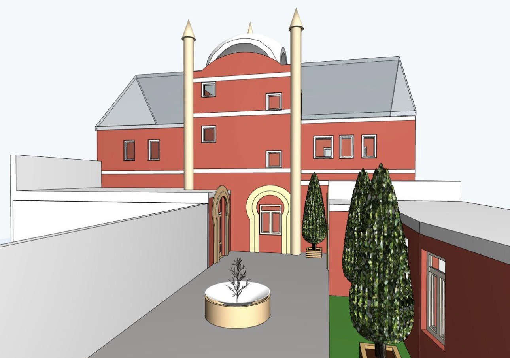

Wir lernen den Islam mit Wissen, Liebe und gutem Charakter.
نتعلّم الإسلام بالعلم والمحبة وحسن الخلق.
😊mit Deutsch und Arabisch😊

العلم، والمداومة، والعمل بالقرآن الكريم
Wissen, Beständigkeit und Leben nach dem Koran
يحرص مركز الإمام مالك على تقوية الصلة بكتاب الله تعالى، والمحافظة على التلاوة والمراجعة، والتعلّم المستمر، والتحلّي بالأخلاق الحسنة.
Im Markaz Imam Malik pflegen wir die Verbindung zum Koran durch regelmäßiges Lesen, Wiederholen und Lernen sowie durch die Förderung eines guten Charakters.
📖 1. المداومة على التلاوة
Regelmäßige Koranrezitation
🧠 2. المراجعة وتثبيت الحفظ
Wiederholung und Festigung des Gelernten
💚 3. العمل بالقرآن وحسن الخلق
Nach dem Koran handeln und gute Charaktereigenschaften pflegen
🌙 4. المحافظة على سورة الكهف يوم الخميس
Die Sure al-Kahf jeden Donnerstag lesen
يداوم المركز على الحزب الراتب وفق الطريقة المغربية في التلاوة الجماعية للقرآن الكريم. وتكون القراءة قبل المغرب في الصيف، وبعد المغرب في الشتاء، بحسب البرنامج المعتمد في المركز.
Wir pflegen die marokkanische Tradition des Hizb Ratib. Im Sommer lesen wir vor dem Maghrib-Gebet, im Winter danach.
﴿وَرَتِّلِ الْقُرْآنَ تَرْتِيلًا﴾
ورتّل القرآن بتأنٍّ وتدبّر.
„Und trage den Koran langsam und deutlich vor.“
سورة المزمل، الآية 4 | Sure al-Muzzammil, Vers 4
نسأل الله أن يجعل القرآن ربيع قلوبنا ونور صدورنا.
Möge Allah den Koran zum Licht unserer Herzen machen.
Die fünf Säulen sind die wichtigsten Grundlagen des Islam. Wir lernen sie kennen und bemühen uns, sie mit Wissen und Aufrichtigkeit zu leben.
بُنِيَ الْإِسْلَامُ عَلَى خَمْسٍ
Der Prophet Muhammad ﷺ erklärte, dass der Islam auf fünf Säulen aufgebaut ist.
Sahih al-Bukhari 8; Sahih Muslim 16
Wir bezeugen, dass es keinen Gott gibt außer Allah und dass Muhammad der Gesandte Allahs ist.
أَشْهَدُ أَنْ لَا إِلَهَ إِلَّا اللَّهُ، وَأَشْهَدُ أَنَّ مُحَمَّدًا رَسُولُ اللَّهِ
Das Glaubensbekenntnis ist die Grundlage des muslimischen Glaubens.
Muslime beten jeden Tag fünf Pflichtgebete: Fajr, Dhuhr, Asr, Maghrib und Ischa. Wir lernen das Gebet und bemühen uns, es regelmäßig und aufmerksam zu verrichten.
وَأَقِيمُوا الصَّلَاةَ
„Verrichtet das Gebet.“
Koran, Sure 2, Vers 43
Im Monat Ramadan fasten erwachsene Muslime, für die das Fasten verpflichtend ist, von der Morgendämmerung bis zum Sonnenuntergang. Sie verzichten auf Essen, Trinken und andere Dinge, die das Fasten ungültig machen.
Kranke, Reisende und andere Menschen können unter bestimmten Voraussetzungen Erleichterungen haben. Kinder können vor der religiösen Verpflichtung nach ihren Kräften üben.
فَمَنْ شَهِدَ مِنْكُمُ الشَّهْرَ فَلْيَصُمْهُ
„Wer von euch den Monat erlebt, der soll in ihm fasten.“
Koran, Sure 2, Vers 185
Die Zakat ist eine Pflichtabgabe für Muslime, wenn die dafür geltenden Voraussetzungen erfüllt sind. Bei vielen Vermögensarten gehört dazu, dass das Vermögen den festgelegten Mindestbetrag (Nisab) erreicht und die weiteren Bedingungen erfüllt sind.
Die Zakat ist nicht dasselbe wie eine freiwillige Spende. Es gibt eigene Regeln dazu, wer sie zahlen muss und wer sie erhalten darf.
وَآتُوا الزَّكَاةَ
„Und entrichtet die Zakat.“
Koran, Sure 2, Vers 43
Wir dürfen jederzeit freiwillig spenden: Geld, Essen, Kleidung oder unsere Hilfe. Auch ein freundliches Wort kann eine gute Tat sein. Wir müssen nicht erst reich sein, um Gutes zu tun.
وَأَنْفِقُوا فِي سَبِيلِ اللَّهِ
„Und gebt auf Allahs Weg aus.“
Koran, Sure 2, Vers 195
Der Hadsch findet zu einer bestimmten Zeit im islamischen Monat Dhul-Hiddscha statt. Er ist einmal im Leben Pflicht für Muslime, die körperlich und finanziell dazu in der Lage sind und die weiteren Voraussetzungen erfüllen.
وَلِلَّهِ عَلَى النَّاسِ حِجُّ الْبَيْتِ مَنِ اسْتَطَاعَ إِلَيْهِ سَبِيلًا
„Und Allah steht es den Menschen gegenüber zu, dass sie die Pilgerfahrt zum Haus unternehmen – wer dazu imstande ist.“
Koran, Sure 3, Vers 97
Die Umra kann grundsätzlich zu verschiedenen Zeiten des Jahres durchgeführt werden. Sie ist nicht dasselbe wie der Hadsch und ersetzt ihn nicht.
Nach der malikitischen Rechtsschule ist die Umra eine bestätigte Sunna und keine Pflicht. Andere Rechtsschulen beurteilen ihre Verbindlichkeit anders.
Wähle bei jeder Frage eine Antwort aus.
Wir lernen die fünf Säulen, verstehen ihre Bedeutung und bemühen uns, den Islam mit Wissen, Aufrichtigkeit und gutem Charakter zu leben.
اللَّهُمَّ وَفِّقْنَا لِطَاعَتِكَ وَحُسْنِ عِبَادَتِكَ
O Allah, hilf uns, Dir zu gehorchen und Dich auf gute Weise anzubeten.
الفجر · Fajr
الظهر · Dhuhr
العصر · Asr
المغرب · Maghrib
العشاء · Isha
Die Gebetswaschung nach der malikitischen Rechtsschule
النية، غسل الوجه، غسل اليدين إلى المرفقين، مسح الرأس كله، غسل الرجلين إلى الكعبين، الدلك، والموالاة.
Absicht, Gesicht waschen, Arme einschließlich der Ellenbogen waschen, den ganzen Kopf streichen, Füße einschließlich der Knöchel waschen, reiben und die Waschungen ohne längere Unterbrechung ausführen.
فرض: ينوي المسلم الوضوء بقلبه.
Pflicht: Die Absicht wird im Herzen gefasst.
يغسل اليدين ثلاث مرات في البداية.
Empfohlen: Die Hände zu Beginn dreimal waschen.
يتمضمض ويستنشق الماء ثلاث مرات . .
Empfohlen: Mund ausspülen und Wasser in die Nase aufnehmen. Einmal genügt; dreimal ist empfohlen.
يغسل الوجه كاملًا ثلاث مرات .
Pflicht: Das ganze Gesicht mindestens einmal waschen. Dreimal ist empfohlen.
يغسل الذراعين مع المرفقين ثلاثا .
Pflicht: Beide Arme einschließlich der Ellenbogen mindestens einmal waschen. Dreimal ist empfohlen.
يمسح الرأس والاذنين معا مرة واحدة، مع مراعاة صفة المسح عند المالكية.
Pflicht: Den ganzen Kopf einmal streichen, entsprechend der malikitischen Lehrmeinung.
يغسل القدمين مع الكعبين ثلاثا .
Pflicht: Beide Füße einschließlich der Knöchel mindestens einmal waschen. Dreimal ist empfohlen.
الدلك والموالاة من فرائض الوضوء عند المالكية. ويجب تعميم العضو بالماء.
Reiben und das Einhalten der Reihenfolge ohne längere Unterbrechung gehören zu den Pflichten nach malikitischer Lehre. Dreimaliges Waschen jedes Körperteils ist keine Voraussetzung für die Gültigkeit. Das Wasser muss den gesamten jeweiligen Bereich erreichen.
Das Gebet Schritt für Schritt nach der malikitischen Rechtsschule
تأكد من دخول الوقت، والطهارة، وستر العورة، واستقبال القبلة، والنية.
Prüfe die Gebetszeit, die rituelle Reinheit, die Bedeckung der vorgeschriebenen Körperteile, die Gebetsrichtung und die Absicht.
يقف المصلي ويقيم الصلاة ويقول بعدها: الله أكبر .
Man steht, wenn man dazu fähig ist, und sagt: Allahu akbar (Allah ist größer).
يقرأ المصلي سورة الفاتحة في الركعة، ويقرأ سورة أخرى في موضعها من الصلاة بحسب أحكام المذهب.
Man rezitiert al-Fatiha und, wo vorgesehen, eine weitere Sure nach den Regeln der Rechtsschule.
يركع المصلي بخشوع، ويقول: سبحان ربي العظيم.
Man verbeugt sich andächtig und kann sagen: Subhana rabbiyal-azim.
يرفع المصلي من الركوع ويعتدل قائمًا.
Man richtet sich aus der Verbeugung wieder auf.
يسجد المصلي على أعضاء السجود، ويقول: سبحان ربي الأعلى.
Man wirft sich nieder und kann sagen: Subhana rabbiyal-a'la.
يجلس المصلي جلسة هادئة بين السجدتين.
Man sitzt ruhig zwischen den beiden Niederwerfungen.
يكرر المصلي أفعال الركعة، ويجلس للتشهد في موضعه بحسب عدد الركعات.
Man wiederholt die Gebetsbewegungen und sitzt je nach Anzahl der Rak'a zum Tashahhud.
يختم المصلي الصلاة بالسلام وفق الصفة المعتمدة في المذهب المالكي.
Man beendet das Gebet mit dem Friedensgruß nach der malikitischen Lehrmeinung.
هذا مدخل تعليمي مختصر وليس وصفًا كاملًا لكل فرائض الصلاة وسننها. سنضيف لاحقًا النصوص العربية الدقيقة، والتشهد، والفروق بين الصلاة السرية والجهرية، وأحكام الإمام والمأموم.
Dies ist eine kurze Einführung, keine vollständige Darstellung aller Pflichten und Sunnas. Die genauen arabischen Texte und weitere Einzelheiten ergänzen wir später.
التحيات لله، الزاكيات لله، الطيبات الصلوات لله، السلام عليك أيها النبي ورحمة الله وبركاته، السلام علينا وعلى عباد الله الصالحين، أشهد أن لا إله إلا الله وحده لا شريك له، وأشهد أن محمداً عبده ورسوله.
Deutsch: Die ehrenden, reinen und guten Worte sowie die Gebete gehören Allah. Friede sei mit dir, o Prophet, und Allahs Barmherzigkeit und Segen. Friede sei mit uns und den rechtschaffenen Dienern Allahs. Ich bezeuge, dass es keinen Gott außer Allah gibt, allein und ohne Partner, und ich bezeuge, dass Muhammad Sein Diener und Gesandter ist.
هذا لفظ مشهور في المذهب المالكي؛ توجد اختلافات يسيرة في ألفاظ التشهد في الروايات.
| الصلاة | Gebet | الركعات المفروضة | Pflicht-Rak'a | القراءة | Rezitation |
|---|---|---|
| الفجر Fadschr |
2 | جهرية laut |
| الظهر Dhuhr |
4 | سرية leise |
| العصر Asr |
4 | سرية leise |
| المغرب Maghrib |
3 | أول ركعتين جهراً erste 2 laut |
| العشاء Ischa |
4 | أول ركعتين جهراً erste 2 laut |
في الظهر والعصر تكون القراءة سرية، وكذلك الركعة الثالثة من المغرب والركعتان الأخيرتان من العشاء.
Bei Zuhr und Asr wird leise rezitiert. Ebenso in der dritten Rak'a von Maghrib und den letzten beiden Rak'a von Ischa.
هذه أعداد الركعات المفروضة فقط، ولا تشمل السنن والنوافل.
اختر الإجابة الصحيحة لكل سؤال.
Wähle für jede Frage die richtige Antwort.
1. كم ركعة فرض في صلاة الفجر؟
Wie viele Pflicht-Rak'a hat Fadschr?
2. أي صلاة فرضها أربع ركعات؟
Welches Gebet hat vier Pflicht-Rak'a?
3. كم ركعة فرض في المغرب؟
Wie viele Pflicht-Rak'a hat Maghrib?
4. بماذا يبدأ التشهد؟
Wie beginnt der Tashahhud?
5. أي الصلوات جهرية في ركعتيها؟
Bei welchem Gebet wird in beiden Rak'a laut rezitiert?
Wir lernen, wie wir Allah gefallen, Menschen gut behandeln und im Alltag Gutes tun.
نتعلم كيف نرضي الله، ونحسن معاملة الناس، ونفعل الخير في حياتنا اليومية.
إِنَّمَا بُعِثْتُ لِأُتَمِّمَ مَكَارِمَ الْأَخْلَاقِ
Der Prophet ﷺ sagte sinngemäß: „Ich wurde gesandt, um die edlen Charaktereigenschaften zu vervollkommnen.“
Hadith: Al-Adab al-Mufrad, Nr. 273; über die Überlieferung und Einstufung gibt es unterschiedliche Bewertungen.
Ein Muslim sagt die Wahrheit, hält Versprechen und betrügt niemanden.
يَا أَيُّهَا الَّذِينَ آمَنُوا اتَّقُوا اللَّهَ وَكُونُوا مَعَ الصَّادِقِينَ
„O ihr, die ihr glaubt! Fürchtet Allah und seid mit den Wahrhaftigen.“
Koran, Sure 9, Vers 119
Wir sprechen freundlich mit unseren Eltern, helfen ihnen und behandeln sie respektvoll – auch wenn wir anderer Meinung sind.
وَبِالْوَالِدَيْنِ إِحْسَانًا
„Und behandelt die Eltern gut.“
Koran, Sure 17, Vers 23. Gehorsam gilt nicht bei einer Aufforderung zur Sünde.
Wir achten auf Körper, Kleidung und Umgebung. Wir lernen die Gebetswaschung (Wudu) und halten unseren Platz sauber.
إِنَّ اللَّهَ يُحِبُّ التَّوَّابِينَ وَيُحِبُّ الْمُتَطَهِّرِينَ
„Allah liebt diejenigen, die oft bereuen, und diejenigen, die sich reinigen.“
Koran, Sure 2, Vers 222
Wir beleidigen niemanden, benutzen keine obszönen Wörter und streiten nicht unnötig. Bei Wut versuchen wir, ruhig zu bleiben.
وَقُولُوا لِلنَّاسِ حُسْنًا
„Und sprecht freundlich zu den Menschen.“
Koran, Sure 2, Vers 83
Wir sagen „Subhanallah“, „Alhamdulillah“, „Allahu akbar“ und „Astaghfirullah“. Wir gedenken Allahs mit dem Herzen und der Zunge.
يَا أَيُّهَا الَّذِينَ آمَنُوا اذْكُرُوا اللَّهَ ذِكْرًا كَثِيرًا
„O ihr, die ihr glaubt! Gedenkt Allahs in häufigem Gedenken.“
Koran, Sure 33, Vers 41
Vor dem Essen: „Bismillah“ – Im Namen Allahs.
Nach dem Essen: „Alhamdulillah“ – Alles Lob gebührt Allah.
Beim Betreten der Wohnung: „Bismillah“ sagen und die Bewohner begrüßen.
Beim Verlassen des Hauses: „Bismillah, tawakkaltu ‘ala Allah“ – Im Namen Allahs, auf Allah vertraue ich.
Beim Gehen: Allah im Herzen gedenken, Gutes tun und niemanden verletzen.
الْحَمْدُ لِلَّهِ
„Alles Lob gebührt Allah.“
Für die Bittgebete beim Verlassen des Hauses siehe Sunan Abi Dawud, Nr. 5095. Nummerierungen können je nach Ausgabe abweichen.
Wir danken Allah für unsere Familie, Gesundheit, Nahrung, Wasser und jede gute Gabe. Wir verschwenden Essen nicht und teilen, wenn wir können.
لَئِنْ شَكَرْتُمْ لَأَزِيدَنَّكُمْ
„Wenn ihr dankbar seid, werde Ich euch ganz gewiss mehr geben.“
Koran, Sure 14, Vers 7
Wir helfen älteren Menschen, unseren Eltern, Mitschülern und jedem, der unsere Hilfe braucht. Wir empfehlen Gutes freundlich und mit Weisheit.
وَتَعَاوَنُوا عَلَى الْبِرِّ وَالتَّقْوَى
„Helft einander zu Güte und Gottesfurcht.“
Koran, Sure 5, Vers 2
Wir reden nicht schlecht über andere hinter ihrem Rücken. Wir verbreiten keine Gerüchte und versuchen nicht, Menschen gegeneinander aufzubringen.
وَلَا يَغْتَبْ بَعْضُكُمْ بَعْضًا
„Und keiner von euch soll über den anderen üble Nachrede führen.“
Koran, Sure 49, Vers 12
Ein guter Muslim kümmert sich um seine Aufgaben und vermeidet neugieriges Einmischen in fremde Angelegenheiten. Wenn jemand Hilfe oder Schutz braucht, darf man natürlich helfen.
مِنْ حُسْنِ إِسْلَامِ الْمَرْءِ تَرْكُهُ مَا لَا يَعْنِيهِ
„Zum guten Islam eines Menschen gehört, dass er lässt, was ihn nichts angeht.“
Hadith: Jamiʿ at-Tirmidhi, Nr. 2317
Wir lernen den Koran, verstehen seine Botschaft, erledigen unsere Schulaufgaben und fragen nach, wenn wir etwas nicht verstehen.
وَقُلْ رَبِّ زِدْنِي عِلْمًا
„Und sag: Mein Herr, mehre mein Wissen!“
Koran, Sure 20, Vers 114
Wir sprechen Segenswünsche für den Propheten Muhammad ﷺ und lernen seine gute Lebensweise kennen.
إِنَّ اللَّهَ وَمَلَائِكَتَهُ يُصَلُّونَ عَلَى النَّبِيِّ
„Gewiss, Allah und Seine Engel sprechen den Segen über den Propheten.“
Koran, Sure 33, Vers 56
Wir können sagen: Allahumma salli wa sallim ‘ala nabiyyina Muhammad.
Wir versuchen, Streit zu beenden, uns zu entschuldigen und anderen zu vergeben. Ein Fehler bedeutet nicht, dass wir schlechte Menschen sind: Wir können daraus lernen.
وَالْكَاظِمِينَ الْغَيْظَ وَالْعَافِينَ عَنِ النَّاسِ
„Und diejenigen, die ihren Zorn zurückhalten und den Menschen verzeihen.“
Koran, Sure 3, Vers 134
Wir tun Gutes, auch wenn niemand zusieht: Wir räumen auf, teilen, trösten traurige Menschen, schützen Schwächere und halten unsere Umgebung sauber.
فَمَنْ يَعْمَلْ مِثْقَالَ ذَرَّةٍ خَيْرًا يَرَهُ
„Wer auch nur das Gewicht eines Stäubchens Gutes tut, wird es sehen.“
Koran, Sure 99, Vers 7
Wähle die richtige Antwort aus. اختر الجواب الصحيح.
1. Was sagen wir vor dem Essen?
2. Wie behandeln wir unsere Eltern?
3. Was ist üble Nachrede?
4. Welche Worte sind Dankbarkeit?
5. Was tun wir, wenn jemand Hilfe braucht?
6. Welche Stelle sagt: „Mehre mein Wissen“?
7. Was tun wir bei einem Streit?
Sei freundlich, ehrlich, hilfsbereit und dankbar. Lerne jeden Tag etwas Gutes und behandle andere so, wie du selbst behandelt werden möchtest.
اللَّهُمَّ حَسِّنْ أَخْلَاقَنَا وَاجْعَلْنَا مِنَ الصَّالِحِينَ
O Allah, verbessere unseren Charakter und mache uns zu rechtschaffenen Menschen.
Wir erinnern uns an Allah im Alltag. Wir sprechen die Bittgebete aufmerksam und lernen ihre Bedeutung.
نذكر الله في يومنا، ونتعلم الأدعية ونفهم معانيها.
Wenn wir aufwachen, danken wir Allah für das Leben und den neuen Tag.
الْحَمْدُ لِلَّهِ الَّذِي أَحْيَانَا بَعْدَ مَا أَمَاتَنَا وَإِلَيْهِ النُّشُورُ
„Alles Lob gebührt Allah, der uns wieder lebendig gemacht hat, nachdem Er uns hat sterben lassen, und zu Ihm ist die Auferstehung.“
Sahih al-Bukhari 6312
Wir vertrauen auf Allah und bitten Ihn um Führung und Schutz.
بِسْمِ اللَّهِ، تَوَكَّلْتُ عَلَى اللَّهِ، لَا حَوْلَ وَلَا قُوَّةَ إِلَّا بِاللَّهِ
„Im Namen Allahs. Auf Allah vertraue ich. Es gibt keine Macht und keine Kraft außer durch Allah.“
Sunan Abi Dawud 5095; Jamiʿ at-Tirmidhi 3426
Wir erwähnen Allah und grüßen die Menschen im Haus freundlich mit Salam.
بِسْمِ اللَّهِ
„Im Namen Allahs.“
Zum Eintreten mit Salam: Koran, Sure 24, Vers 61. Für die Erwähnung Allahs beim Betreten des Hauses: Sahih Muslim 2018.
Wir beginnen mit dem Namen Allahs.
بِسْمِ اللَّهِ
„Im Namen Allahs.“
Sahih al-Bukhari 5376; Sahih Muslim 2022
Wir danken Allah für das Essen und die Versorgung.
الْحَمْدُ لِلَّهِ
„Alles Lob gebührt Allah.“
Der Prophet ﷺ sprach nach dem Essen Dankgebete; siehe Sahih Muslim 2734. „Alhamdulillah“ ist eine kurze Form des Lobpreises.
Wir sprechen dieses Bittgebet vor dem Betreten des Toilettenraums.
اللَّهُمَّ إِنِّي أَعُوذُ بِكَ مِنَ الْخُبُثِ وَالْخَبَائِثِ
„O Allah, ich suche Zuflucht bei Dir vor den männlichen und weiblichen Teufeln.“
Sahih al-Bukhari 142; Sahih Muslim 375
Wir bitten Allah um Vergebung.
غُفْرَانَكَ
„Ich bitte Dich um Vergebung.“
Sunan Abi Dawud 30; Jamiʿ at-Tirmidhi 7
Wir danken Allah für Kleidung, die uns bedeckt und schützt.
الْحَمْدُ لِلَّهِ الَّذِي كَسَانِي هَذَا وَرَزَقَنِيهِ مِنْ غَيْرِ حَوْلٍ مِنِّي وَلَا قُوَّةٍ
„Alles Lob gebührt Allah, der mir dies zum Anziehen gegeben und mich damit versorgt hat, ohne dass ich selbst Macht oder Kraft dazu hätte.“
Sunan Abi Dawud 4023; Jamiʿ at-Tirmidhi 3458
Wir legen uns auf die rechte Seite, wenn es möglich ist, und sprechen dieses Bittgebet:
بِاسْمِكَ اللَّهُمَّ أَمُوتُ وَأَحْيَا
„In Deinem Namen, o Allah, sterbe ich und lebe ich.“
Sahih al-Bukhari 6324
Diese kurzen Worte können wir im Alltag häufig sprechen, ohne eine bestimmte Situation abwarten zu müssen:
سُبْحَانَ اللَّهِ
Gepriesen sei Allah.
الْحَمْدُ لِلَّهِ
Alles Lob gebührt Allah.
اللَّهُ أَكْبَرُ
Allah ist größer als alles.
أَسْتَغْفِرُ اللَّهَ
Ich bitte Allah um Vergebung.
Zum häufigen Gedenken Allahs: Koran, Sure 33, Vers 41.
Wähle die richtige Antwort. اختر الجواب الصحيح.
1. Was sagen wir vor dem Essen?
2. Was bedeutet Alhamdulillah?
3. Was sagen wir nach dem Verlassen der Toilette?
4. Welches Bittgebet sprechen wir beim Aufwachen?
5. Wann können wir Allah gedenken?
Wir lernen die Bittgebete, verstehen ihre Bedeutung und versuchen, sie im Alltag anzuwenden.
اللَّهُمَّ أَعِنَّا عَلَى ذِكْرِكَ وَشُكْرِكَ وَحُسْنِ عِبَادَتِكَ
„O Allah, hilf uns, Deiner zu gedenken, Dir zu danken und Dich auf gute Weise anzubeten.“
Sunan Abi Dawud 1522; Sunan an-Nasa'i 1303
تعلم السور والآيات القصيرة واحفظها خطوة بخطوة
Lerne kurze Suren und Koranverse Schritt für Schritt.